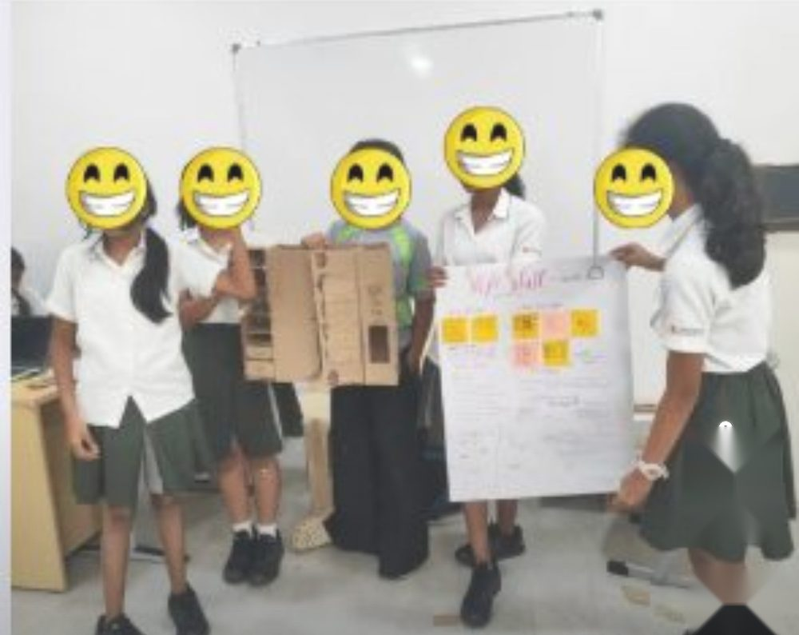
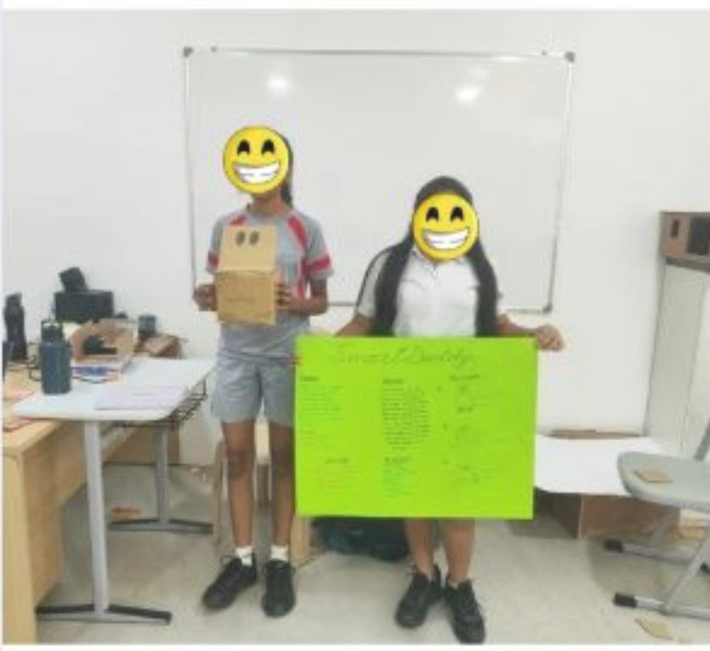
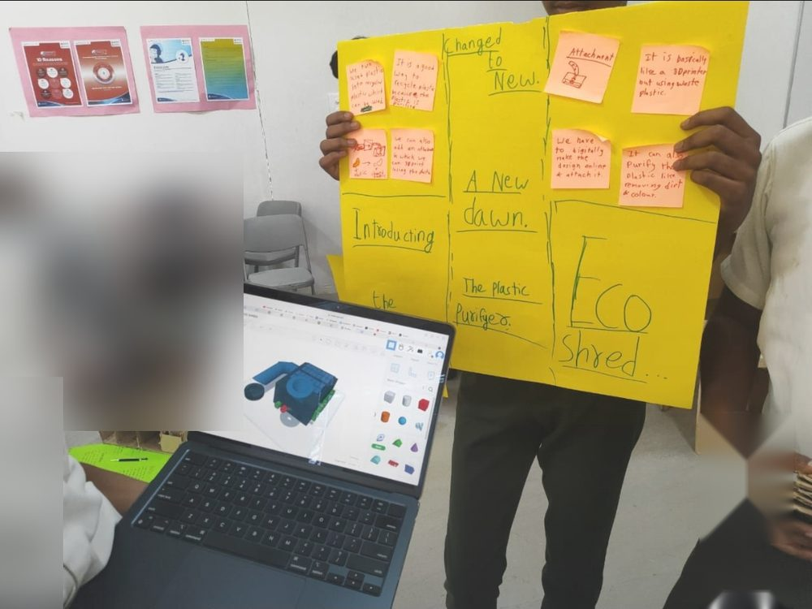

The situation
It all starts here, in our schools. We hosted a one-day Rapid Prototyping Sprint, a step towards a school-level innovation ecosystem. That is the foundational layer of any thriving entrepreneurial and innovation landscape, because before unicorn startups and breakthrough products there are curious young minds asking "why not?"
What I tried
Students worked in teams to ideate, prototype and pitch solutions to real-world problems, all within a single day.
What happened
Three of the low-fidelity prototypes, built in record time:
A tech-driven, AI-powered wardrobe assistant that helps users dress smartly from the clothes they already have, to cut clothing waste and the fast fashion landfill crisis.
A smart stationery dispenser, also AI-enabled, imagined as a community initiative for equitable access to learning tools in shared spaces like libraries and schools.
A smart ring with an app that monitors wellbeing and mental health, giving young users a discreet and proactive way to check in with themselves.
To extend the sprint, our top innovators were mentored one-on-one by Ms. Kseniya Maksimava, Design and Entrepreneurship Educator at Branksome Hall Asia, South Korea. She offered insights on refining prototypes, finding market fit, understanding competition and targeting an audience.
What I learned
This sprint was not the end. It was the beginning of something larger. It is time we see school projects as future ventures in disguise.
Thank you to Aprajita Ralli and Afreen Shaikh for your constant support and encouragement. If you are building real-world innovation ecosystems at the school level, I would like to connect.


